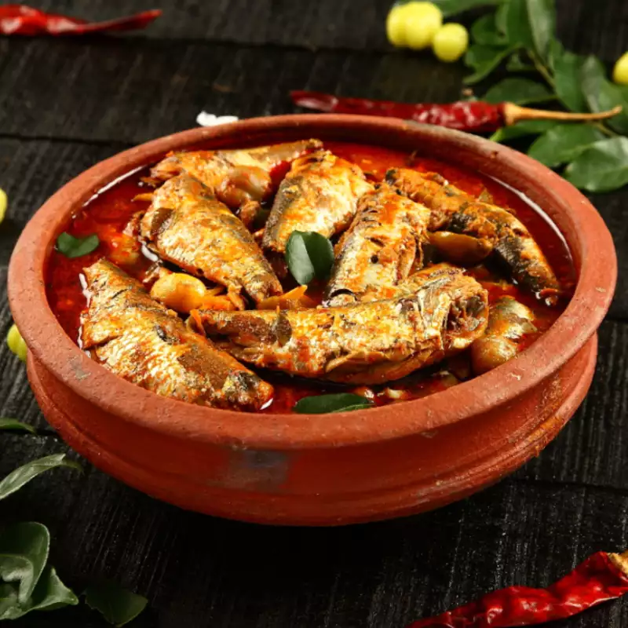
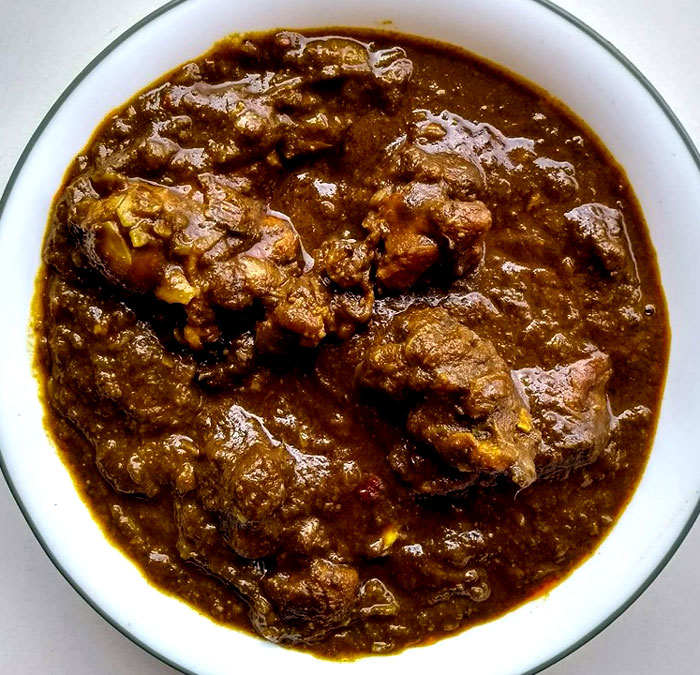
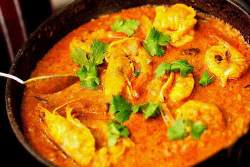

South Indian Foods
Hyderabadi Biryani

Hyderabadi biryani, also known as Hyderabadi dum biryani, is a style of biryani from Hyderabad, India made with basmati rice and goat meat and cooked with the dum pukht method. Originating in the kitchens of the Nizam of Hyderabad, it combines elements of Hyderabadi and Mughlai cuisines. Hyderabad biryani is a key dish in Hyderabadi cuisine.
Hyderabadi biryani is mainly made of base ingredients that are basmati rice, goat meat or (sometimes chicken or beef), dahi, fried onion and ghee. Spices include; cinnamon, cloves, cardamom (elaichi), bay leaves, nutmeg, papaya paste, Caraway (shahi jeera), mace flower (javitri), star anise (biryani flower), lemon, and saffron. Coriander leaves and garnish.
Kadala Curry

The Kadala Curry gets its delicious flavours from the freshly ground coconut along with delectable flavours from green chillies, fennel, coriander, curry leaves and more. Serve it along with Puttu, Appam, Kerala Parotta or even just hot steamed rice topped with ghee to make a delicious meal.
Kerala Kadala Curry Recipe is a delectable recipe that is a popular dish from the Kerala Cuisine. Kadala in this dish means chickpeas and most popularly the kala chana or the brown chickpea is used to make this dish. The coconut is ground along with fennel and coriander seeds and then cooked along in a gravy that has flavours coming from baby onions, green chillies and curry leaves along with the addition of cooking it in coconut oil.
Masala Dosa

One of the most popular South Indian dishes, the batter for masala dosas is made with soaked lentils and rice. Then, potatoes and spices are mashed together to prepare a spicy filling for the masala dosa. Masala Dosa recipe is simply the Indian version of pancakes. This crispy and spicy Dosa recipe is often served with coconut chutney and Sambhar. It is often paired with different chutneys and some Payasam for a complete meal.
Meen Murringakka Curry

Meen Murringakka Curry is a mouth-watering South Indian fish curry recipe which is prepared with sardines, ginger, garlic, tamarind, curry leaves, coconut, drumsticks (murringakka) and some whole spices. Tempered with shallots and red chillies. Served with steamed rice.
Gongura Mamsam

Gongura mutton is an authentic recipe from Andhra Pradesh. This is one of the popular and traditional recipes of Andra Cuisine. This recipe has its distinctive flavor because of the Gongura leaves. Gongura leaves are called sorrel leaves in English. You can find this lip-smacking dish on the menu of all South Indian restaurants. The sourness of the Gongura leaves adds a unique flavor to the Mutton curry.
It is made with mutton and spices like salt, turmeric powder, green chili paste, ginger, and garlic paste, cumin, coriander powder, and oil. It is served with the rice, roti, Pulao, and biryani as well.
Konju Varutharacha Curry

This prawn recipe is filled with delicious and aromatic flavours of spices. The South Indian cuisine, specially from Kerala, is full of diverse curries and distinct regional flavours. It is popular for the delicious fish and prawn curries cooked with fresh spices and coconut. It is made with hot spices with juicy prawns and a warm blend of coconut milk with chillies, coconut, tamarind along with other spices and herbs. It is usually served with rice and roti.